Manual do usuário: WolfxRacing Overlay para iRacing
Versão do overlay neste pacote: 1.2.0 (Fase 20.2.2 + estilos Glass Fumê e Sport + gráfico de pedais na Telemetria, Luz ABS, Luz TC, Retorno à pista e Estratégia de pneus). Os prints foram gerados no modo demonstração (dados simulados); as fontes e as medidas podem variar um pouco no seu Windows.
Sumário
- O que é · 2. Instalação · 3. Configurar o jogo · 4. Uso diário · 5. As 16 janelas · 6. Como ler os números · 7. Dash e Stream Deck · 8. Solução de problemas · 9. Atualizar · 10. Limites
1. O que é
16 janelas independentes e transparentes, sempre por cima do jogo, que podem ser movidas, redimensionadas e ligadas/desligadas pelo menu do ícone vermelho "i" perto do relógio do Windows. Tudo roda localmente; nenhum dado seu é enviado para a internet.
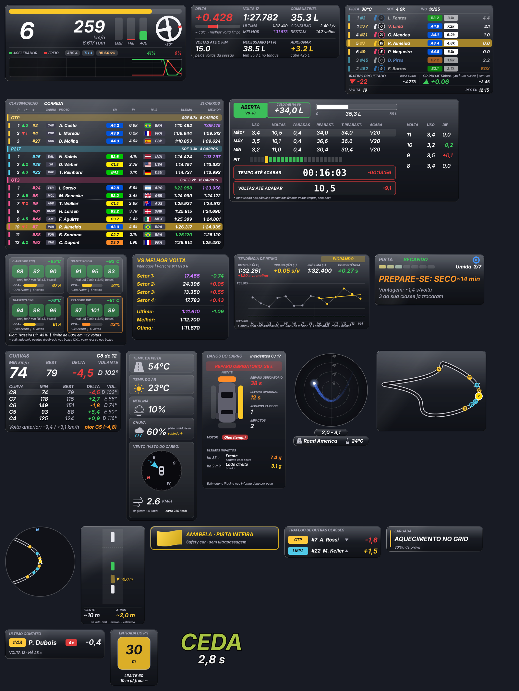
2. Instalação (uma única vez)
- Python 3.12. Instale o Python Install Manager em python.org/downloads.
- Extraia o
.zip dentro de C:\WolfxRacing (o zip já cria a pasta wolfxracing-overlay-iracing; o resultado é C:\WolfxRacing\wolfxracing-overlay-iracing). Outra pasta também funciona, mas veja o aviso do Stream Deck em STREAMDECK.md.
- Dê duplo clique em
overlay\instalar.bat. Ele prepara o Python 3.12 e instala pyirsdk e PySide6-Essentials. Aguarde "Instalação concluída".
- Teste sem o jogo:
overlay\testar_demo.bat (dados simulados, nomes fictícios). Procure o ícone vermelho "i" perto do relógio do Windows (pode estar na seta ^).
Instalação manual (alternativa): py -3.12 -m pip install pyirsdk PySide6-Essentials.
3. Configurar o iRacing
- Vídeo em janela sem bordas: no iRacing, aba Display, desmarque Full Screen e Border e reinicie o jogo. Visualmente é idêntico à tela cheia.
- Na tela cheia exclusiva o Windows não deixa nenhuma janela de outro programa aparecer sobre o jogo. A única forma de contornar seria injetar código no iRacing, o que este projeto não faz (poderia ser tratado como violação das regras do serviço).
- O overlay precisa que o iRacing esteja aberto e dentro de uma sessão; antes disso a janela mostra "Aguardando o iRacing..."
4. Uso diário
- Abra
overlay\iniciar_overlay.bat (pode ser antes ou depois do jogo).
- Posicionar as janelas: clique com o botão direito no ícone vermelho "i" e desmarque "Travar posição". Janelas destravadas ganham contorno amarelo: arraste para onde quiser. Ao terminar, marque "Travar posição" (os cliques passam a atravessar o overlay).
- Redimensionar: com a posição destravada, arraste uma borda (muda só largura ou só altura) ou um canto (muda as duas, mantendo a proporção); ou segure Ctrl e gire a roda do mouse. Restaurar o tamanho das janelas (100%) volta ao padrão.
- Aparecer sozinho: com a posição travada, as janelas aparecem quando você entra no carro e somem 6 s depois de sair (garagem, menu, replay). Para ficarem sempre visíveis, desmarque Aparecer sozinho ao entrar no carro.
- Iniciar com o Windows:
ativar_inicio_automatico.bat (e desativar_inicio_automatico.bat para desfazer).
- Perfis de exibição (menu da bandeja > Perfil de exibição): Treino, Classificação e Corrida guardam, para cada janela, posição, tamanho e se aparece. Automático troca sozinho pelo tipo de sessão (só depois de 3 s estáveis e nunca com as janelas destravadas).
- Visual: Visual moderno (carbono, Bahnschrift), Estilo Glass Fumê (vidro escuro translúcido, padrão), Estilo Sport (itálico, cantos cortados e detalhes vermelhos, igual ao dash Sport) e Transparência do fundo (40 a 100%). Desmarcar Visual moderno volta ao visual clássico.
- Desempenho: Modo economia de CPU (metade das atualizações) e Prioridade baixa do overlay (o jogo tem preferência).
- Fechar: Sair no menu da bandeja,
Ctrl+Alt+F22 (Stream Deck) ou, se travar, overlay\fechar_overlay.bat.
Estilos visuais
Os dois estilos usam a tipografia esportiva (itálico; títulos em Sui Generis, se o SimHub estiver instalado). Glass Fumê e Sport não se combinam: ao marcar um, o outro desmarca. A Transparência do fundo vale para os dois (no Glass Fumê, valores entre 60% e 80% deixam o vidro mais evidente). O vidro é simulado com transparência e reflexos; o overlay não borra o que está atrás da janela.
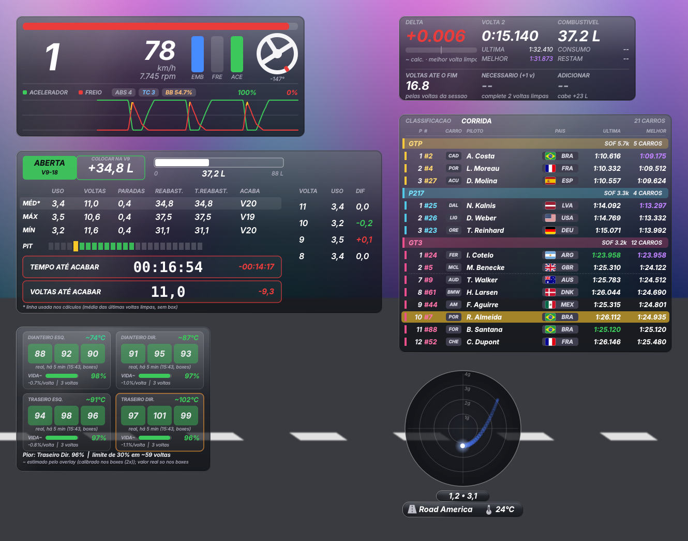
5. As janelas
1. Telemetria
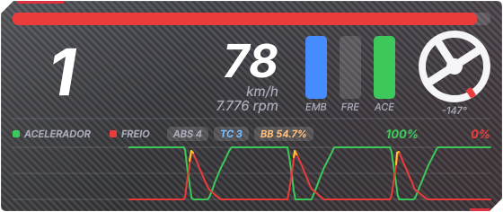
Marcha, velocidade, RPM, pedais (embreagem, freio, acelerador), volante girando como o real (marcador vermelho no topo; ângulo em graus: + esquerda, - direita) e gráfico de acelerador e freio dos últimos ~10 s.
- O gráfico pode ser escondido pelo menu da bandeja (a janela diminui).
- Barra superior = RPM em relação ao limite do carro.
2. Voltas (delta, tempos e combustível)
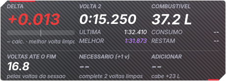
Delta para a melhor volta, tempos atual / última / melhor e uma faixa de cálculo de combustível.
- Voltas até o fim: em corrida por tempo, estima pelo ritmo (mediana das últimas voltas limpas).
- Necessário (+1 v) = (voltas até o fim + margem) x consumo médio. Adicionar: "OK" = termina com a folga; "+x,x L" amarelo = abastecer; vermelho = não cabe de uma vez.
- A margem (0,5 / 1 / 1,5 / 2 voltas) muda em bandeja > Margem de segurança do combustível.
3. Relativo
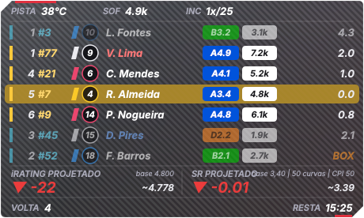
Carros à frente e atrás de você na pista, com classe, licença, iRating e distância em segundos, mais a projeção de iRating e SR.
- Sua linha fica em destaque. Linha apagada = outra classe; nome em vermelho = uma volta ou mais à frente; azul = uma volta ou mais atrás; "BOX" = nos boxes.
- A projeção de iRating/SR é projetada, não oficial, e é marcada como provisória até a confirmação.
4. Classificação
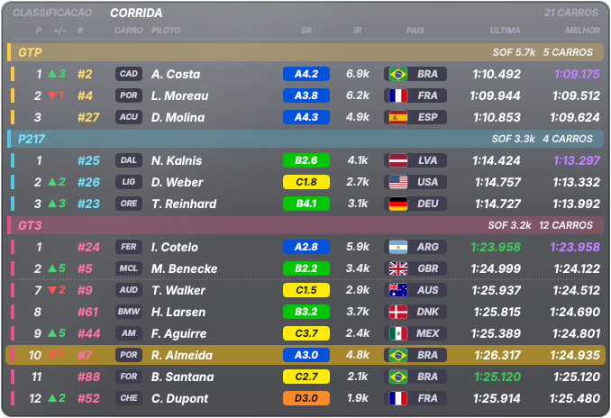
Carros agrupados por classe (da mais rápida para a mais lenta), com SOF da classe, número, marca, piloto, país, última e melhor volta.
- Melhor volta em roxo = a mais rápida da classe. Última volta em verde = igualou a melhor do piloto.
- Na sua classe aparecem o topo e os carros ao seu redor; nas outras, os primeiros. Linha pontilhada = carros omitidos.
- Emblemas de marcas não vêm no pacote (marcas registradas): mostra as iniciais até você colocar suas próprias imagens em
overlay/emblemas/.
5. Mapa da pista
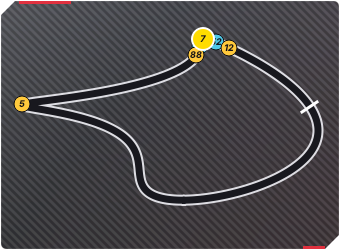
Traçado da pista com a posição de todos os carros (bolinhas com número e cor da classe; a sua é amarela e maior).
- O traçado é aprendido na sua primeira volta limpa em cada pista e fica salvo localmente.
- Se sair estranho: bandeja > Refazer o mapa desta pista.
6. Radar de proximidade
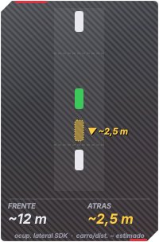
Visão de cima com seu carro no centro e os carros ao redor (alcance de ~20 m à frente e atrás).
- Branco = normal; amarelo = atenção; vermelho com brilho lateral = o iRacing avisa carro ao lado.
- O iRacing só informa se há carro ao lado, não a posição lateral exata; o radar é para prevenir contato, não para medir centímetros.
7. Pneus
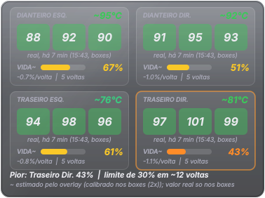
Vida útil e temperatura de cada pneu. O iRacing só informa valores reais com o carro parado no box; durante a corrida o overlay estima.
- Valor com "~" = estimado. A estimativa se calibra sozinha a cada parada nos boxes.
- Cores de temperatura: azul = frio; verde = ideal; amarelo = quente; vermelho = muito quente. Contorno laranja = pneu mais gasto.
8. Setores (vs melhor volta)
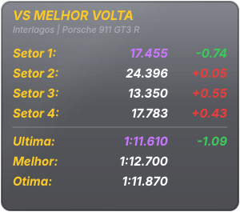
Compara cada setor com o seu melhor tempo para o mesmo carro e a mesma pista.
- Verde = mais rápido; vermelho = mais lento; roxo = novo melhor setor.
- A referência fica em
recordes_pessoais.json (local).
9. Clima e vento
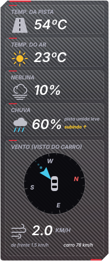
Temperatura da pista e do ar, neblina, chuva (atual + tendência) e bússola do vento vista do carro.
- A seta azul mostra para onde o vento sopra, relativo ao carro (para cima = vento de cauda).
- O iRacing não entrega previsão de chuva para programas externos.
10. Danos
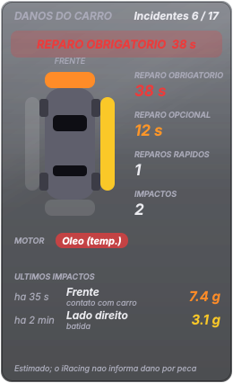
Reparo obrigatório/opcional (tempo informado pelo iRacing), incidentes, carro visto de cima com as zonas de impacto, avisos de motor e os últimos impactos.
- O iRacing não informa dano por peça. Direção e força dos impactos são estimadas.
11. Painel de combustível e pit
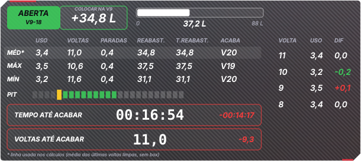
Janela de pit, litros a colocar, tabela de consumo (média, máximo, mínimo), barras de voltas possíveis para parar e tempo/voltas até acabar.
- Caixa colorida: ABERTA (verde) = pode parar nessas voltas; FECHADA (laranja) = cedo demais; SEM JANELA (vermelho) = sem plano viável.
- Estimativa baseada no seu ritmo recente; não prevê bandeira amarela.
12. Força G
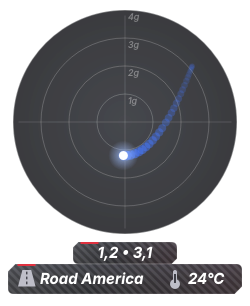
Círculo de G lateral e longitudinal com rastro, G atual e pico, nome e temperatura da pista.
- Cada anel = 1 g (alcance configurável de 2 a 5 g). Curva à esquerda leva o ponto para a esquerda; freando, o ponto desce.
13. Telemetria: gráfico de pedais (novo na 1.2.0)
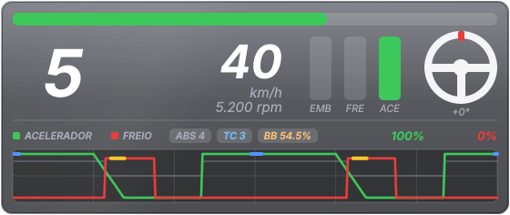
A janela Telemetria (a primeira, com marcha, velocidade, rpm, barras dos pedais e volante) ganhou um gráfico melhor: o acelerador (verde) e o freio (vermelho) correm da direita para a esquerda, como um espelho de como você pilota. Não há mais uma janela Inputs separada. Não grava nada no disco.
- Tempo do gráfico: de 5 a 30 segundos (padrão 12 s), em bandeja > Telemetria: tempo do gráfico de pedais.
- Freio por cima do acelerador: onde as duas linhas estão no alto ao mesmo tempo, você pisou os dois pedais juntos.
- Marca do ABS (amarelo): o trecho do freio em que o ABS atuou. Se cobre a freada inteira, você freou demais. Vem ligada.
- Marca do TC (azul): o trecho do acelerador em que as rodas patinaram. É estimada (veja a Luz do TC). Vem desligada.
- De onde vêm os pedais: como chegam ao carro (padrão, já com a calibração do seu pedal), cru (como o pé pisa) ou os dois (a diferença é a calibração do pedal).
- Degraus da marcha: uma linha cinza mostra em que marcha você estava a cada instante (liga e desliga na bandeja).
- Aparece pilotando; some na garagem, nos menus e nos replays (como as demais janelas no modo "aparecer sozinho").
14. Luz do ABS

Um ícone solto, sem painel e sem texto, que acende enquanto o ABS está atuando e apaga quando ele para. No simulador você não sente o pedal vibrar; a luz mostra isso. Uma piscada curta no ponto de freada é o ABS trabalhando bem; acesa até o meio da curva, a freada passou do ponto.
- Cor: dourado (padrão), vermelho ou branco. Como pisca: no ritmo do ABS (padrão), piscada suave ou luz fixa.
- Quando não atua, a janela é totalmente transparente; para vê-la apagada (cinza) marque deixar visível e apagada quando não atua ou use Testar a Luz do ABS (5 s) na bandeja, útil para posicionar.
- Carros sem ABS: a luz simplesmente nunca acende. Dado real do iRacing (
BrakeABSactive).
15. Luz do TC (perda de tração)

A luz do controle de tração na tela: acende quando as rodas patinam na aceleração. A cor padrão é o azul, de propósito diferente do dourado do ABS.
- É uma estimativa. O iRacing não informa quando o controle de tração corta. O overlay deduz pela relação entre as rotações do motor e a velocidade do carro em cada marcha: se o motor sobe sem o carro andar mais, as rodas patinam. Por isso pode deixar passar uma patinada muito pequena ou avisar a mais no limite.
- Aprende o câmbio sozinho, a cada marcha, enquanto você roda sem acelerar e sem frear forte. Marcha que ainda não aprendeu não acende a luz. Ao entrar numa sessão nova o aprendizado recomeça (o próximo carro pode ter outro câmbio).
- Quando ela não olha: pouco acelerador, freando, embreagem pisada, quase parado, até 0,4 s depois de uma troca de marcha, limitador dos boxes e corte de giro.
- Sensibilidade: fina (a partir de 3,5%), normal (5%, padrão) ou grossa (7,5%). Se a luz não para de acender, passe para grossa. Com pneus frios ela acende mais: é normal.
- Mesmas opções de cor, piscar, visível-apagada e teste (5 s) da Luz do ABS.
16. Retorno à pista (PARE / CEDA / LIVRE)
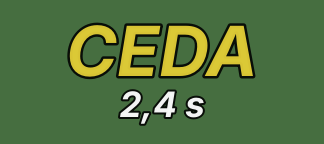
Você saiu da pista ou ficou atravessado: entro agora ou espero? O aviso diz PARE, CEDA ou LIVRE e quantos segundos faltam para o carro mais próximo que vem atrás chegar até você. Só aparece quando precisa e some sozinho.
| Palavra |
Quando (padrão) |
O que fazer |
| PARE |
menos de 1,5 s |
não entre, ele está em cima |
| CEDA |
de 1,5 a 3,5 s |
pode entrar, mas deixe ele passar |
| LIVRE |
3,5 s ou mais, ou ninguém em 30 s |
entre tranquilo (acima de 30 s não aparece número) |
- A cor desliza do vermelho ao verde conforme sobram mais segundos (verde exatamente no limite do CEDA); o texto tem borda preta para ler sobre grama e brita.
- Limites ajustáveis na bandeja: vermelho de 1 a 12 s e laranja de 2 a 25 s. O laranja fica sempre pelo menos 0,5 s acima do vermelho; se você empurra um contra o outro, o outro se move sozinho. Ajuste ao seu carro: quanto mais tempo você leva para sair da brita e ganhar velocidade, maior deve ser o vermelho.
- Quando aparece: fora da pista, ou na pista quase parado (abaixo de 2 m/s, uns 7 km/h). Ao voltar a andar fica mais 1,5 s. Nunca no box nem no pit lane. Deixar sempre visível enquanto piloto é opcional; Testar o aviso de Retorno (9 s) percorre os três estados.
- Como o número é calculado (~): o overlay mede ao vivo o quanto cada carro avança na pista (não usa a média da volta, que erraria nas retas) e calcula o tempo para ele chegar onde você está. No primeiro instante, antes de conseguir medir, usa o tempo de volta estimado. Conta qualquer carro que vem atrás, também retardatário; ignora carros no pit lane, fora da pista ou praticamente parados, e o pace car.
17. Estratégia de pneus (chuva x seco)
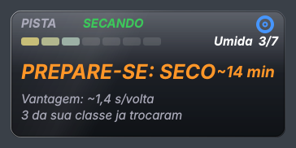
Diz qual pneu vale a pena agora e, antes da corrida, com qual largar. Só lê dados: nunca pede pneus nem mexe no carro.
- Linha de cima: para onde a pista vai (SECANDO, MOLHANDO, SEM CHUVA) e o pneu que você tem montado (azul = chuva, branco = seco). A tendência precisa de uns 90 s de leitura.
- Nível da pista: os sete níveis do iRacing, de Seca a Encharcada, com barra e número.
- O que fazer: SEGUIR (cinza), PREPARE-SE (laranja, com os minutos estimados quando a pista está secando), TROCAR (laranja, pulsando) e PEDIDO NOS BOXES (verde, quando você já pediu o pneu no menu de boxes do iRacing). O aviso só desce depois de 15 s, para não piscar.
- Regras (padrão): com pneu de chuva, TROCAR PARA SECO quando a pista chega a Quase seca sem chuva; com pneu de seco, TROCAR PARA CHUVA a partir de Molhada (ou Pouco molhada com chuva forte). Se pelo menos dois pilotos da sua classe já provaram que o outro pneu rende 1 s ou mais por volta, o aviso vira TROCAR.
- Vantagem (~): segundos por volta que o outro pneu rende, estimados com as últimas voltas limpas (sem passar pelo pit) dos pilotos da sua classe nos últimos 10 min. Sem rivais no outro pneu aparece "--". Só informação: nunca muda o aviso por si só. Também mostra quantos da sua classe já trocaram.
- Antes da largada (corrida em espera, ou classificação parado na garagem/boxes): LARGUE COM SECO ✓ (verde) ou PARA A LARGADA: TROQUE PARA CHUVA (vermelho, pulsando). Nesse momento a janela aparece também na garagem.
- Carro sem pneu de chuva: mostra o aviso "Este carro não tem pneu de chuva".
6. Como ler os números: real, calculado, estimado
- Sem marca = real, entregue pelo iRacing (velocidade, marcha, RPM, pedais, volante, força G, combustível no tanque, clima, reparo e avisos do motor).
- "~" = calculado ou estimado pelo overlay (consumo por volta, voltas/litros até o fim, tempos de setor, distâncias no radar, temperatura e vida dos pneus durante a corrida, lado e força dos impactos, iRating e SR projetados, Luz do TC, segundos do Retorno à pista e vantagem dos pneus).
- O iRacing não informa: quando o controle de tração corta (a Luz do TC é uma dedução), se uma volta foi invalidada, a posição lateral dos outros carros, a previsão de chuva, dano por peça e o iRating/SR oficial durante a sessão. Nada disso é inventado pelo overlay.
- Delta e setores: o iRacing não diz se a volta foi invalidada; o overlay usa um critério próprio e conservador.
7. Dash e Stream Deck
- Dash MagicDash 4 Glass Fumê ou Sport (3 telas): veja DASH.md.
- Perfil de Stream Deck XL (janelas, controles, iniciar/fechar, pasta Suporte): veja STREAMDECK.md.
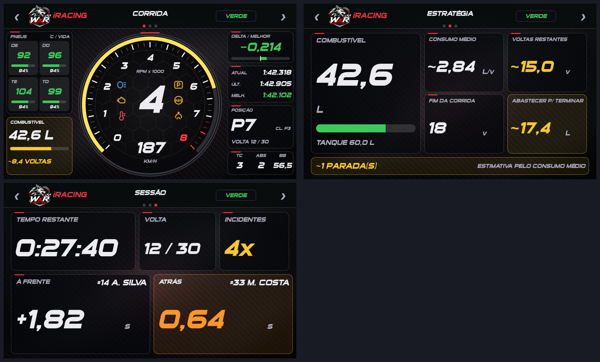
8. Solução de problemas
| Sintoma |
O que fazer |
| "Falta o arquivo ov_nucleo.py" ou "ov_v12.py" |
Copie todos os arquivos de overlay/ para a mesma pasta. |
| O overlay não abre |
Abra overlay\overlay_log.txt e anexe-o em uma Issue. |
| "Aguardando o iRacing..." |
O jogo precisa estar aberto e dentro de uma sessão. |
| Não aparece sobre o jogo |
Use janela sem bordas (seção 3). |
| Uma janela mostra "Sem dados" |
Normal em menus/garagem. Se persistir na pista, anexe o log em uma Issue. |
| Classificação vazia em treino |
Carros sem tempo válido ainda não entram na lista. |
| Esquerda e direita trocadas (pneus, danos, força G) |
Com o overlay fechado, ponha "pneu_lado_invertido": true no config.json. |
| Seta do vento invertida |
"vento_invertido": true no config.json. |
| Um atalho do Stream Deck não funciona |
Outro programa pode estar usando a combinação; veja o log (overlay_log.txt). |
| Valor estranho |
Anote a janela e a situação (treino/corrida/carro) e abra uma Issue com o log. |
9. Atualizar para uma versão nova
- Feche o overlay (Sair na bandeja).
- Baixe o novo
.zip e copie por cima da pasta atual (o config*.json, recordes, mapas e logs ficam e continuam valendo, pois não vêm no pacote).
- Leia o CHANGELOG para ver o que mudou. Reabra o overlay.
10. Limites conhecidos
- A estimativa de temperatura e vida dos pneus é uma estimativa: antes da primeira calibração (1ª parada nos boxes) pode errar bastante; depois serve bem para comparar e acompanhar a tendência.
- A Luz do TC e a vantagem dos pneus são estimativas; a Estratégia de pneus usa regras simples sobre o nível de umidade do iRacing e ainda precisa de validação em chuva real. Os novos overlays não têm atalhos de teclado do Stream Deck nesta versão (use o menu da bandeja).
- O radar não conhece a posição lateral dos outros carros (limitação do iRacing).
- Em tela cheia exclusiva nenhum overlay aparece (limitação do Windows).
- Os testes automáticos usam dados simulados; a validação real depende do uso em sessões do iRacing (veja
overlay/ROTEIRO_VALIDACAO.txt).
Mais detalhes técnicos de cada recurso: referencia/GUIA_ORIGINAL.txt (guia completo escrito durante o desenvolvimento).